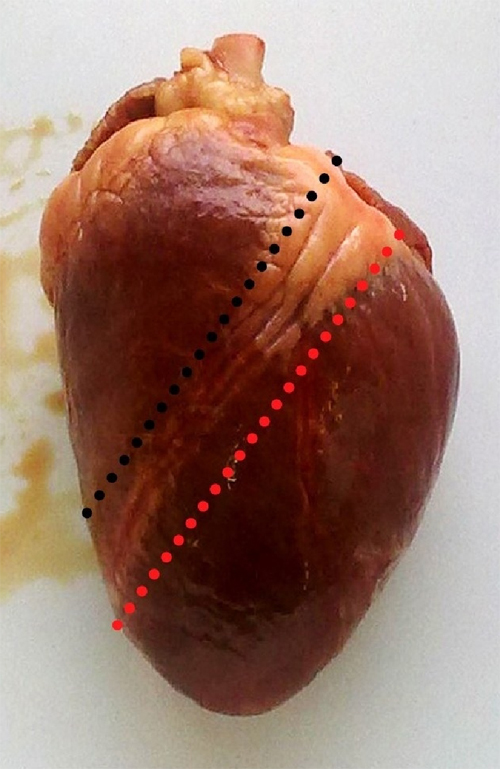
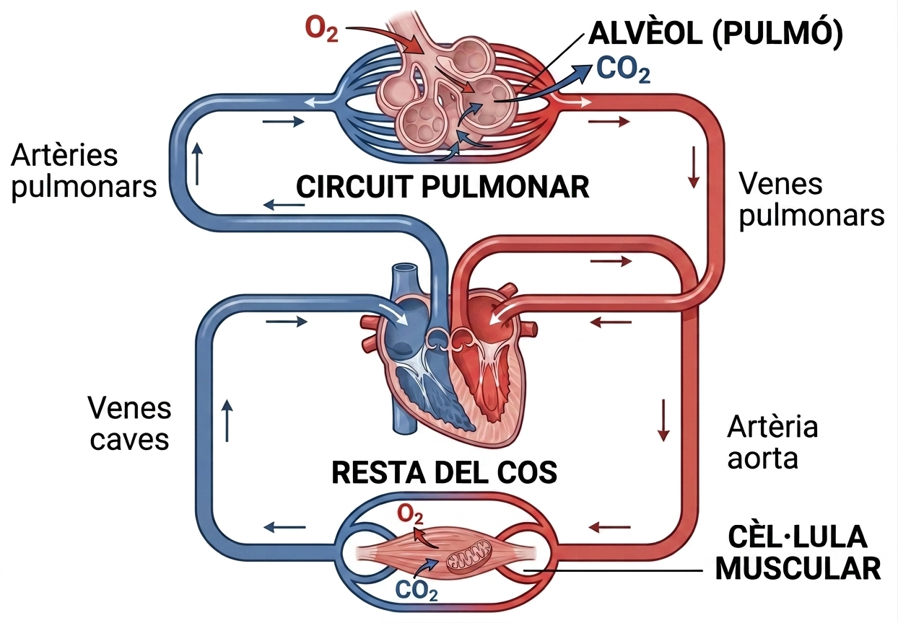

✕
📖 Paraules d'avui آج کے الفاظ
aurícula
ایٹریم (دل کا اوپری خانہ)
cavitat de dalt · rep la sang
ventricle
وینٹریکل (دل کا نچلا خانہ)
cavitat de baix · envia la sang fora
septe (envà)
پردہ (درمیانی دیوار)
paret del mig · separa dret i esquerre
vàlvula
والو (دروازہ)
porta d'un sol sentit
miocardi
دل کا پٹھا
el múscul del cor
coronàries
کورونری شریانیں
artèries que porten sang al propi cor
aorta
اورطہ
l'artèria més gran · sang a tot el cos
vena cava
بڑی رگ (وینا کاوا)
porta sang sense oxigen al cor
Altres paraules: cavitat = خانہ · artèria pulmonar = پھیپھڑوں کی شریان · gruixut = موٹا · prim = پتلا · tall = کٹ · esforç = محنت، مشقت · infart = دل کا دورہ · barrejar = ملانا
✕
✏️ A · Paraules d'altres sessions
Uneix cada paraula amb la seva traducció. La primera és l'exemple.
پچھلے سیشنوں کے الفاظ: ہر لفظ کو لکیر سے اس کے ترجمے کے ساتھ ملائیں۔ پہلا مثال ہے۔
capil·lar
خون کی بہت باریک نالی
oxigen
ہیموگلوبن
hemoglobina
پھیپھڑے
pulmons
خون کا سرخ خلیہ
eritròcit
آکسیجن
✏️ B · Paraules d'avui
Copia cada paraula en català.
آج کے الفاظ: ہر لفظ کاتالان میں نقل کریں۔
✕
✏️ C · La sang, les dues voltes i el Marc خون، دو چکر اور مارک
Completa amb: cos · oxigen · pulmons.
ان الفاظ سے مکمل کریں۔ پہلا جملہ: خون کے دو چکر۔ دوسرا جملہ: مارک میں ہیموگلوبن کم ہے اور وہ جلدی تھک جاتا ہے۔
La sang fa dues voltes: una pels i una per tot el .
El Marc té poca hemoglobina: li arriba menys i es cansa abans d'hora.
✕
✕
📖 Per llegir: la teva predicció آپ کا اندازہ
Avui obrireu un cor d'animal de veritat (de xai o de porc). Abans, pensa: com és el cor per dins? Dibuixa'l com te l'imaginis. No passa res si t'equivoques: és una predicció.
آج آپ ایک جانور کا اصلی دل کھولیں گے (بھیڑ یا سور کا)۔ اس سے پہلے سوچیں: دل اندر سے کیسا ہے؟ جیسا آپ سوچتے ہیں ویسا بنائیں۔ اگر غلطی ہو جائے تو کوئی بات نہیں: یہ صرف ایک اندازہ ہے۔
✕
✏️ Dibuixa el cor per dins دل کو اندر سے بنائیں
✕
Crec que el cor té cavitats per dins.
میرا خیال ہے کہ دل کے اندر ___ خانے ہیں۔ پھر: کیا دل کے اندر آکسیجن والا خون اور بغیر آکسیجن کا خون آپس میں ملتے ہیں؟ «ہاں» یا «نہیں» پر نشان لگائیں۔
La sang amb oxigen i la sang sense oxigen es barregen dins el cor? Sí No
✕
📖 Per llegir: els tubs grossos del cor دل کی موٹی نالیاں
Recorda la sessió 3: la sang fa dues voltes, una pels pulmons i una per tot el cos. El cor és la bomba que fa aquestes dues voltes. Per fora, al cor hi arriben i en surten tubs grossos. Les venes caves porten al cor sang sense oxigen. L'aorta i l'artèria pulmonar treuen la sang fora del cor.
سبق ۳ یاد کریں: خون دو چکر لگاتا ہے، ایک پھیپھڑوں میں اور ایک پورے جسم میں۔ دل وہ پمپ ہے جو یہ دونوں چکر چلاتا ہے۔ باہر سے، دل تک موٹی نالیاں آتی ہیں اور اس سے نکلتی ہیں۔ بڑی رگیں (وینا کاوا) بغیر آکسیجن کا خون دل تک لاتی ہیں۔ اورطہ اور پھیپھڑوں کی شریان خون کو دل سے باہر لے جاتی ہیں۔
✕
✏️ Què has de fer آپ کو کیا کرنا ہے
Mira la foto. Llegeix la pista de cada tub i escriu el número a la caixa. La vena cava superior (1) és l'exemple.
تصویر دیکھیں۔ ہر نالی کا اشارہ پڑھیں اور خانے میں اس کا نمبر لکھیں۔ اوپر والی بڑی رگ (۱) مثال ہے۔
✕
Cor real, vist per davantاصلی دل، سامنے سے
Vena cava superior · entra per dalt, a l'esquerra de la fotoاوپر والی بڑی رگ · تصویر میں بائیں طرف، اوپر سے داخل ہوتی ہے
1Aorta · el tub més gruixut i dur; surt cap amunt i fa una corbaاورطہ · سب سے موٹی اور سخت نالی؛ اوپر کی طرف نکلتی ہے اور مڑتی ہے
Artèria pulmonar · surt per davant, just a sota de l'aorta, cap als pulmonsپھیپھڑوں کی شریان · سامنے سے، اورطہ کے بالکل نیچے سے نکلتی ہے اور پھیپھڑوں کی طرف جاتی ہے
Vena cava inferior · entra pel costat dret de la foto; porta sang de les cames i la panxaنیچے والی بڑی رگ · تصویر میں دائیں طرف سے داخل ہوتی ہے؛ ٹانگوں اور پیٹ سے خون لاتی ہے
✕
📖 Per llegir: el cor és un múscul دل ایک پٹھا ہے
El cor és un múscul: el miocardi. Toca'l: és dur i ferm. Treballa sense parar, de dia i de nit, i per això necessita molt oxigen. Per sobre del cor hi corren uns vasos petits: les artèries coronàries. Envolten el cor com una corona.
دل ایک پٹھا ہے: اسے مایوکارڈیم (دل کا پٹھا) کہتے ہیں۔ اسے چھو کر دیکھیں: یہ سخت اور مضبوط ہے۔ یہ دن رات بغیر رکے کام کرتا ہے، اس لیے اسے بہت آکسیجن چاہیے۔ دل کے اوپر چھوٹی نالیاں چلتی ہیں: یہ کورونری شریانیں ہیں۔ یہ دل کو ایک تاج کی طرح گھیرے ہوئے ہیں۔
✕
🔍 On porten la sang les coronàries? کورونری شریانیں خون کہاں لے جاتی ہیں؟
صحیح جواب پر دائرہ لگائیں، پھر کاتالان میں لکھیں کیوں۔
Al múscul del propi corخود دل کے پٹھے تک
Als pulmonsپھیپھڑوں تک
Ho he triat perquè el cor és un que treballa sense parar i necessita molt .
✕
✕
🧪 Com fer el tall: llegiu-ho tot abans de començar کاٹنے کا طریقہ: شروع کرنے سے پہلے سب پڑھیں
- Poseu-vos els guants. El cor sempre dins la safata.دستانے پہنیں۔ دل ہمیشہ ٹرے کے اندر رہے۔
- Busqueu la ratlla de greix que baixa en diagonal: separa els dos ventricles. No talleu a sobre.چربی کی وہ لکیر ڈھونڈیں جو ترچھی نیچے جاتی ہے: یہ دونوں وینٹریکل کو الگ کرتی ہے۔ عین اس کے اوپر نہ کاٹیں۔
- Primer tall: a un costat de la ratlla, seguint els punts de la foto. De dalt a baix, a poc a poc.پہلا کٹ: لکیر کے ایک طرف، تصویر کے نقطوں کے ساتھ۔ اوپر سے نیچے، آہستہ آہستہ۔
- Obriu-lo com un llibre i mireu-hi dins.اسے کتاب کی طرح کھولیں اور اندر دیکھیں۔
- Segon tall: a l'altre costat de la ratlla. Obriu l'altre ventricle.دوسرا کٹ: لکیر کی دوسری طرف۔ دوسرا وینٹریکل کھولیں۔
- En acabar: el cor a la bossa, les eines a la pica i mans amb sabó.آخر میں: دل تھیلے میں، اوزار سنک میں، اور ہاتھ صابن سے دھوئیں۔

Els punts: els 2 tallsنقطے: دو کٹ
⚠️ Seguretat: talleu sempre cap enfora, lluny de les mans. Si us talleu, aviseu de seguida. Si no vols tocar el cor, pots mirar, llegir els passos al grup i escriure. No passa res.
حفاظت: ہمیشہ ہاتھوں سے دور، باہر کی طرف کاٹیں۔ اگر کٹ لگ جائے تو فوراً بتائیں۔ اگر آپ دل کو چھونا نہیں چاہتے تو آپ دیکھ سکتے ہیں، گروپ کو مراحل پڑھ کر سنا سکتے ہیں اور لکھ سکتے ہیں۔ کوئی بات نہیں۔
✕
📖 Per llegir: què hi ha a dins اندر کیا ہے
A dins, el cor té 4 cavitats. A dalt, 2 aurícules: reben la sang que torna al cor. A baix, 2 ventricles: són més grossos i amb més múscul, i envien la sang fora. Al mig hi ha una paret sencera, el septe: separa el costat dret de l'esquerre. Entre les cavitats hi ha les vàlvules: portes que s'obren només en un sentit.
اندر سے دل کے چار خانے ہیں۔ اوپر دو ایٹریم: یہ دل میں واپس آنے والا خون وصول کرتے ہیں۔ نیچے دو وینٹریکل: یہ بڑے ہیں اور ان میں زیادہ پٹھا ہے، یہ خون کو باہر بھیجتے ہیں۔ درمیان میں ایک پوری دیوار ہے، پردہ (سیپٹم): یہ دائیں طرف کو بائیں طرف سے الگ کرتی ہے۔ خانوں کے درمیان والو ہیں: ایسے دروازے جو صرف ایک طرف کھلتے ہیں۔
✕
⚠️ Compte: al dibuix, el septe és la paret entre el ventricle dret (blau) i l'esquerre (vermell). El costat dret del cor surt a l'esquerra del dibuix: el mirem de cara.
دھیان دیں: تصویر میں پردہ وہ دیوار ہے جو دائیں وینٹریکل (نیلا) اور بائیں وینٹریکل (سرخ) کے درمیان ہے۔ دل کا دایاں حصہ تصویر میں بائیں طرف نظر آتا ہے: ہم اسے سامنے سے دیکھتے ہیں۔
✕
📖 Per llegir: d'on surt el so «lub-dub» «لب-ڈب» کی آواز کہاں سے آتی ہے
oberta · tancadaکھلا: خون گزرتا ہے · بند: خون واپس نہیں جاتا
Quan escoltes el cor sents dos sons: lub — dub. Els fan les vàlvules quan es tanquen de cop, com una porta. Lub: es tanquen les vàlvules d'entrada (entre l'aurícula i el ventricle). Dub: es tanquen les vàlvules de sortida (a l'aorta i a l'artèria pulmonar).
جب آپ دل کی آواز سنتے ہیں تو دو آوازیں آتی ہیں: لب — ڈب۔ یہ آوازیں والو بناتے ہیں جب وہ اچانک بند ہوتے ہیں، جیسے دروازہ۔ لب: داخلے کے والو بند ہوتے ہیں (ایٹریم اور وینٹریکل کے درمیان)۔ ڈب: باہر نکلنے کے والو بند ہوتے ہیں (اورطہ اور پھیپھڑوں کی شریان میں)۔
✕
🧭 Compta i completa گنیں اور مکمل کریں
Mira dins del cor obert. Completa amb aquestes paraules: 2 · 2 · septe · vàlvules · entrada · sortida. El 4 és l'exemple.
کھلے دل کے اندر دیکھیں۔ ان الفاظ سے مکمل کریں۔ عدد ۴ مثال ہے۔
He comptat 4 cavitats: aurícules a dalt i ventricles a baix.
La paret del mig que separa el costat dret de l'esquerre es diu .
Les portes que deixen passar la sang en un sol sentit són les .
El so «lub» el fan les vàlvules d' i el so «dub», les de .
✕
🔍 El septe پردہ
Per funcionar bé, el septe ha de tenir… Encercla.
ٹھیک کام کرنے کے لیے پردے میں کیا ہونا چاہیے: ایک چھوٹا سوراخ، یا کوئی سوراخ نہیں؟ دائرہ لگائیں، پھر کاتالان میں لکھیں کیوں۔
Un forat petitایک چھوٹا سوراخ
Cap foratکوئی سوراخ نہیں
Ho he triat perquè, si hi hagués un forat, la sang amb oxigen i la sang sense oxigen es .
✕
✏️ Dibuixa el cor OBERT i escriu-hi els noms amb fletxes: aurícula · ventricle · septe · vàlvula کھلا دل بنائیں اور تیر لگا کر کاتالان میں نام لکھیں
✕
✕
📖 Per llegir: un múscul que treballa més és més gruixut جو پٹھا زیادہ کام کرے وہ موٹا ہوتا ہے
Tall dels 2 ventricles. Compara les dues parets.دونوں وینٹریکل کا کٹ۔ دونوں دیواروں کا موازنہ کریں۔
Un múscul es fa gruixut quan treballa molt. Per exemple, el múscul de la cuixa és molt més gros que el del dit petit. Al cor passa el mateix. Un dels dos ventricles envia la sang als pulmons, que són a prop. L'altre envia la sang a tot el cos: fins al cap i fins als peus, que són lluny.
جو پٹھا زیادہ کام کرتا ہے وہ موٹا ہو جاتا ہے۔ مثلاً ران کا پٹھا چھوٹی انگلی کے پٹھے سے بہت بڑا ہے۔ دل میں بھی یہی ہوتا ہے۔ ایک وینٹریکل خون کو پھیپھڑوں میں بھیجتا ہے، جو قریب ہیں۔ دوسرا وینٹریکل خون کو پورے جسم میں بھیجتا ہے: سر تک اور پاؤں تک، جو دور ہیں۔
✕
✏️ Raono en 4 passos: per quina raó una paret és més gruixuda? چار مراحل میں سوچیں: ایک دیوار زیادہ موٹی کیوں ہے؟
👁️ Observo · میں دیکھتا/دیکھتی ہوں
La paret del ventricle és més gruixuda que la del ventricle .
❓ Em pregunto · میں پوچھتا/پوچھتی ہوں
Per quina raó el ventricle esquerre té més múscul?
🔗 Connecto · میں جوڑتا/جوڑتی ہوں
El ventricle dret envia la sang als , que són a prop. L'esquerre l'envia a , que és lluny.
✅ Dedueixo · میں نتیجہ نکالتا/نکالتی ہوں
Per tant, el ventricle esquerre és més gruixut perquè .
✕
🔢 Ordena les dues voltes de la sang: 1 · 2 · 3 · 4 خون کے دو چکروں کو ترتیب دیں
ہر خانے میں ۱، ۲، ۳ یا ۴ لکھیں۔ نمبر ۱ پہلے سے لکھا ہے: یہ مثال ہے۔
1Arriba al costat dret del cor, sense oxigenدل کے دائیں حصے میں پہنچتا ہے، بغیر آکسیجن کے
Va als pulmons i agafa oxigenپھیپھڑوں میں جاتا ہے اور آکسیجن لیتا ہے
Surt cap a tot el cos per l'aortaاورطہ کے ذریعے پورے جسم کی طرف نکلتا ہے
Torna al costat esquerre del cor, amb oxigenآکسیجن کے ساتھ دل کے بائیں حصے میں واپس آتا ہے
✕
💡 Idea clau
El cor són dues bombes en una. La dreta envia la sang als pulmons (a prop: poca força). L'esquerra l'envia a tot el cos (lluny: molta força). El septe les separa: la sang no es barreja.
دل ایک میں دو پمپ ہے۔ دایاں پمپ خون کو پھیپھڑوں میں بھیجتا ہے (قریب: کم طاقت)۔ بایاں پمپ اسے پورے جسم میں بھیجتا ہے (دور: زیادہ طاقت)۔ پردہ انہیں الگ کرتا ہے: خون آپس میں نہیں ملتا۔
✕
✕
🅰 Cas Arnau: un forat al septe آرنو کا کیس: پردے میں سوراخ
L'Arnau té 14 anys i va néixer amb un forat al septe. Quan corre, es cansa molt abans que els companys i respira molt de pressa. En repòs està bé. El costat esquerre del cor empeny més fort que el dret. Pel forat, una part de la sang amb oxigen passa al costat dret i torna als pulmons. El costat dret i els pulmons han de moure massa sang. La sang que surt cap al cos porta l'oxigen normal.
آرنو ۱۴ سال کا ہے۔ پیدائش سے اس کے پردے میں ایک سوراخ ہے۔ جب وہ دوڑتا ہے تو ساتھیوں سے بہت پہلے تھک جاتا ہے اور بہت تیز سانس لیتا ہے۔ آرام میں وہ ٹھیک ہے۔ دل کا بایاں حصہ دائیں حصے سے زیادہ زور سے دھکیلتا ہے۔ سوراخ سے آکسیجن والا کچھ خون دائیں حصے میں جاتا ہے اور دوبارہ پھیپھڑوں میں جاتا ہے۔ دائیں حصے اور پھیپھڑوں کو بہت زیادہ خون چلانا پڑتا ہے۔ جسم کی طرف جانے والے خون میں آکسیجن معمول کے مطابق ہے۔
✕
🅱 Cas Nadia: coronàries tapades نادیہ کا کیس: بند کورونری شریانیں
Les coronàriesکورونری شریانیں
La Nadia té 58 anys. Quan puja les escales, li fa mal el pit. Quan s'atura i descansa, el mal se'n va. El metge li diu: «Tens les coronàries mig tapades per greix».
نادیہ ۵۸ سال کی ہے۔ جب وہ سیڑھیاں چڑھتی ہے تو اس کے سینے میں درد ہوتا ہے۔ جب وہ رک کر آرام کرتی ہے تو درد چلا جاتا ہے۔ ڈاکٹر کہتا ہے: «آپ کی کورونری شریانیں چربی سے آدھی بند ہیں»۔
Quan descansem, el cor batega a poc a poc i en té prou amb poca sang. Quan fem esforç (córrer, pujar escales), el cor batega de pressa i el miocardi necessita més oxigen. Si la coronària està mig tapada, no hi passa prou sang i fa mal. Si es tapa del tot, una part del múscul del cor es mor: és un infart.
جب ہم آرام کرتے ہیں تو دل آہستہ دھڑکتا ہے اور اسے تھوڑا خون کافی ہے۔ جب ہم محنت کرتے ہیں (دوڑنا، سیڑھیاں چڑھنا) تو دل تیز دھڑکتا ہے اور دل کے پٹھے کو زیادہ آکسیجن چاہیے۔ اگر کورونری شریان آدھی بند ہو تو کافی خون نہیں گزرتا اور درد ہوتا ہے۔ اگر یہ پوری بند ہو جائے تو دل کے پٹھے کا ایک حصہ مر جاتا ہے: یہ دل کا دورہ (انفارکٹ) ہے۔
✕
✏️ Tria un cas i completa ایک کیس چنیں اور مکمل کریں
Paraules: esforç · miocardi · oxigen.
خانے میں A یا B لکھیں۔ پھر صرف اپنے کیس کا جملہ مکمل کریں۔
He triat el cas .
Cas A: al costat dret del cor i als pulmons hi arriba massa sang, i el que no canvia és l' que surt cap al cos.
Cas B: al múscul del cor, el , li arriba menys sang de la que necessita quan fa .
✕
🔍 Quan es troben malament? انہیں تکلیف کب ہوتی ہے؟
دائرہ لگائیں۔ پھر کاتالان میں مکمل کریں: آپ کا چنا ہوا شخص آرام میں ٹھیک اور محنت میں خراب کیوں ہوتا ہے؟
Només quan fan esforçصرف جب وہ محنت کرتے ہیں
Tot el dia igualسارا دن ایک جیسا
Paraules: a poc a poc · més · poca.
La persona que he triat està bé quan descansa perquè el cor batega i en té prou amb sang. Es troba malament amb l'esforç perquè el cor necessita sang.
✕
✕
❓ Per quina raó el cor té 4 cavitats i no 2? دل کے دو کی بجائے چار خانے کیوں ہیں؟
اس سبق کے الفاظ استعمال کرتے ہوئے کاتالان میں مکمل کریں۔
El cor té 4 cavitats perquè hi ha dues bombes: la dreta envia la sang als i l'esquerra a . El les separa i així la sang amb oxigen i la sang sense oxigen no es .
✕
✕
📚 Tasca per a casa · cada dia 10 minuts: ① llegeix una targeta en català · ② si no l'entens, llegeix l'urdú · ③ tapa-la i explica-la en veu alta en català · ④ marca ✔ a sota quan ho sàpigues.
گھر کا کام، ہر دن ۱۰ منٹ: ۱) ایک کارڈ کاتالان میں پڑھیں۔ ۲) سمجھ نہ آئے تو اردو پڑھیں۔ ۳) کارڈ ڈھانپ کر کاتالان میں بلند آواز سے بیان کریں۔ ۴) یاد ہو تو ✔ لگائیں۔
✕
1Les 4 cavitatsچار خانے
A dalt, 2 aurícules: reben la sang. A baix, 2 ventricles: la bomben fora del cor. Costat dret: sang sense oxigen. Costat esquerre: sang amb oxigen.
اوپر دو ایٹریم: خون وصول کرتے ہیں۔ نیچے دو وینٹریکل: خون کو دل سے باہر پمپ کرتے ہیں۔ دایاں: بغیر آکسیجن۔ بایاں: آکسیجن کے ساتھ۔
✕
2El septe i les vàlvulesپردہ اور والو
El septe és una paret sencera, sense forats: la sang amb oxigen i la sang sense oxigen no es barregen. Les vàlvules són portes d'un sol sentit. Lub = es tanquen les vàlvules d'entrada. Dub = es tanquen les de sortida.
پردہ ایک پوری دیوار ہے، بغیر سوراخ کے: آکسیجن والا اور بغیر آکسیجن کا خون آپس میں نہیں ملتے۔ والو ایک ہی طرف کھلنے والے دروازے ہیں۔ لب = داخلے کے والو بند ہوتے ہیں۔ ڈب = باہر نکلنے کے والو بند ہوتے ہیں۔
✕
3Dues bombes, dues pressionsدو پمپ، دو دباؤ

Circuit petit (pulmons): pressió baixa, per no trencar els alvèols. Circuit gran (tot el cos): pressió alta, per arribar fins als peus. Per això calen dues bombes separades. El ventricle esquerre té la paret unes 3 vegades més gruixuda: ha d'empènyer més fort.
چھوٹا چکر (پھیپھڑے): کم دباؤ، تاکہ الویولی نہ پھٹیں۔ بڑا چکر (پورا جسم): زیادہ دباؤ، تاکہ خون پاؤں تک پہنچے۔ اسی لیے دو الگ پمپ ضروری ہیں۔ بائیں وینٹریکل کی دیوار تقریباً تین گنا زیادہ موٹی ہے: اسے زیادہ زور سے دھکیلنا پڑتا ہے۔
✕
4Les coronàries i l'infartکورونری شریانیں اور دل کا دورہ
Les coronàries porten sang amb oxigen al miocardi. Un infart és quan una coronària es tapa: una part del múscul es mor. És una emergència: truca al 112.
کورونری شریانیں آکسیجن والا خون دل کے پٹھے تک لے جاتی ہیں۔ دل کا دورہ: کورونری شریان بند ہو جائے اور پٹھے کا ایک حصہ مر جائے۔ یہ ایمرجنسی ہے: ۱۱۲ پر فون کریں۔
✕
5El cor és un músculدل ایک پٹھا ہے
El miocardi batega tota la vida sense parar. Les seves cèl·lules tenen molts mitocondris (SA1), que fan l'energia amb oxigen. Per això el cor necessita molt oxigen.
دل کا پٹھا ساری زندگی بغیر رکے دھڑکتا ہے۔ اس کے خلیوں میں بہت سے مائٹوکونڈریا ہیں (پہلا یونٹ)، جو آکسیجن سے توانائی بناتے ہیں۔ اسی لیے دل کو بہت آکسیجن چاہیے۔
✕
6Harvey (1628)ہاروے (۱۶۲۸)
El metge William Harvey va fer càlculs: en una hora el cor bomba molta més sang de la que hi ha a tot el cos! Per tant, la sang no es gasta: torna al cor i fa voltes.
ڈاکٹر ولیم ہاروے نے حساب لگایا: ایک گھنٹے میں دل پورے جسم کے خون سے بہت زیادہ خون پمپ کرتا ہے! اس لیے خون ختم نہیں ہوتا: یہ دل میں واپس آتا ہے اور چکر لگاتا ہے۔
✕
✔ Ho sé explicar? Prepara l'examen · respon en veu alta, en català کیا میں بیان کر سکتا/سکتی ہوں؟
Les 4 cavitats: quines reben i quines envien? (1)چار خانے: کون سے وصول کرتے ہیں اور کون سے بھیجتے ہیں؟
Què fa el septe? I les vàlvules? D'on surt el «lub-dub»? (2)پردہ کیا کرتا ہے؟ اور والو؟ «لب-ڈب» کہاں سے آتا ہے؟
Per quina raó el ventricle esquerre és més gruixut? (3)بایاں وینٹریکل زیادہ موٹا کیوں ہے؟
Què és un infart? Per quina raó és una emergència? (4)دل کا دورہ کیا ہے؟ یہ ایمرجنسی کیوں ہے؟
Per quina raó el cor necessita tant d'oxigen? (5)دل کو اتنی زیادہ آکسیجن کیوں چاہیے؟
Com va saber Harvey que la sang fa voltes? (6)ہاروے کو کیسے پتا چلا کہ خون چکر لگاتا ہے؟